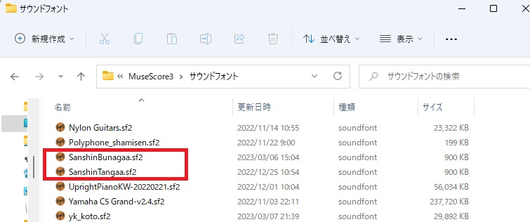
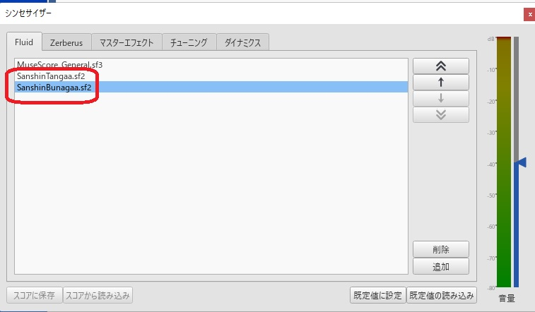
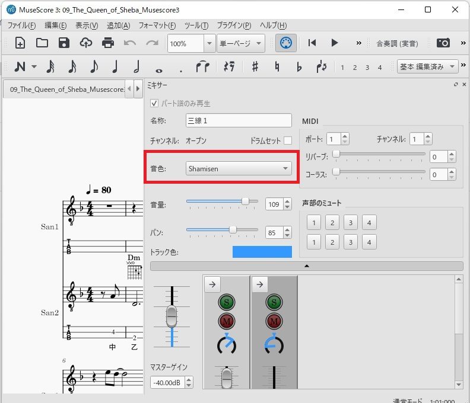
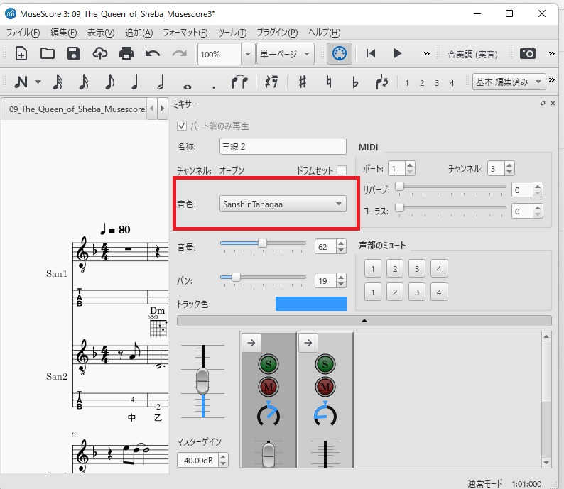
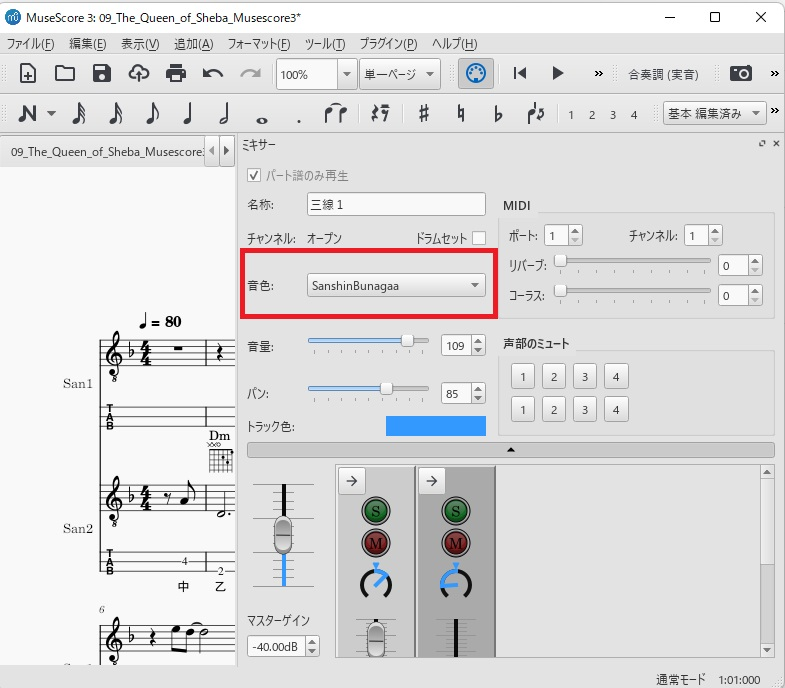

三線の音色をMuseScoreで演奏する手順
MuseScore3の音色には、三線は残念ながらありません。その代わりに三味線
(Shaimsen)を利用しています。
ただ、三線の音色が欲しくなり自宅にある三線の音で音色（サウンドフォン
ト）を作りました。
MuseScore3に三線のサウンドフォントを利用する方法は、次の手順です。
なお、実際の演奏のためサンプルの楽譜データを事前にダウンロードしておき
ます
サンプル楽譜データ(ダウンロード)
1.三線のサンドフォントをダウンロード
サイズは、いずれも0.9MBと小さいので圧縮していません。
〇通常版(ダウンロード)
〇少しエコーがある(ダウンロード)
2.三線のサンドフォントを配置する
MuseScoreのサウンドフォント格納フォルダに三線のサンドフォントを配置しま
す。
MuseScoreのサウンドフォント格納フォルダ
:"C:\Users\[ユーザ]\Documents\MuseScore3\サウンドフォント"

3.シンセサイザーで、三線のサンドフォントを追加
・MuseScoreを起動、表示でシンセサイザーを選択します
・【追加】ボタンを押し、サウンドフォントの一覧より三線のサウンドフォ
ントを読み込みます
・２つ目を追加する場合は、【追加】ボタンを再度押し追加の三線のサウン
ドフォントを読み込み追加します
・【規定値に設定】ボタンを押します。（これで、演奏時のミキサーで三線
音色が選択できるようになります）

4.ミキサーで三線の音色を設定
・MuseScoreの表示でミキサーを選択します
・パートの音色を三線の音色に変更します
変更前

通常版の音色に変更

少しエコーがある音色に変更

5.演奏する